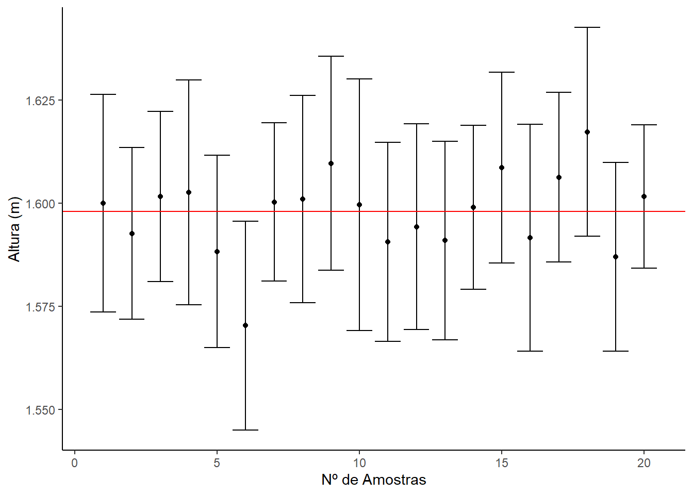
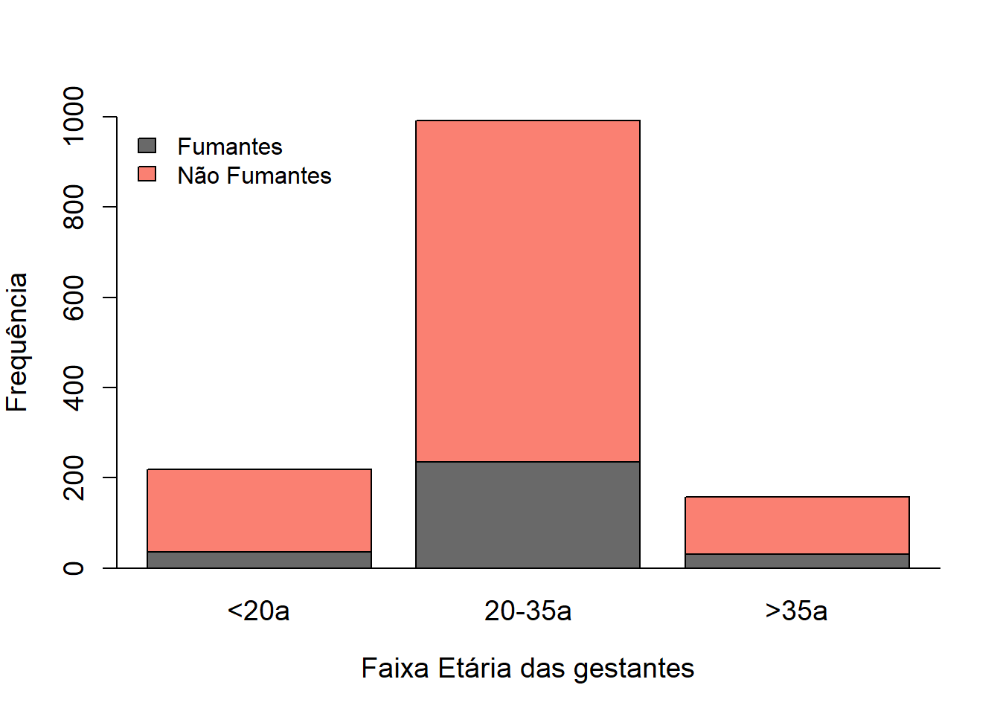

Capítulo 14 Distribuição normal
Analisando as curvas sobrepostas às distribuições das populações 1 e 2, verificamos que elas possuem algumas características importantes:
- Existe um único pico;
- A massa da distribuição está no centro;
- Há simetria em relação à linha central, representada pela média do conjunto de dados;
- O formato da curva é semelhante a um sino, ou seja, à medida que os dados se afastam da média, diminui a probabilidade de serem encontrados.
- Este formato, portanto, depende da variabilidade dos dados (magnitude do desvio padrão)

As curvas de distribuição de dados que se comportam desta maneira são conhecidas por curva normal ou curva gaussiana. Os parâmetros da curva normal são a média e o desvio padrão.
Observe no gráfico anterior das curvas de distribuição das duas populações sendo estudadas. Elas têm o mesmo formato, porque como calculado acima, elas têm o mesmon desvio padrão, a diferença está na média mais baixa da população 2.
Se tivéssemos uma terceira população, com média igual a população 1 (1.596 m), mas com maior desvio padrão, por exemplo 10 cm, teríamos uma curva sobreposta a da população 1, mas mais achatada.

Como estamos observando, se tivermos um desvio padrão pequeno, ele torna a curva mais pontiaguda; desvio padrão grande, achata a curva (população 3). Se as médias são diferentes, mas com mesmo desvio padrão, elas são iguas, mas em posições diferentes. Se for uma média menor, ficará a esquerda da curva com média maior ( população 2 vs população 1). Em outras palavras, as curvas normais dependem da média e de seu desvio padrão. Modificando qualquer um deles, teremos curvas distintas.
14.1 Curva Normal Padronizada
Cada variável aleatória contínua tem a sua média e seu desvio padrão e, portanto, a sua curva normal correspondente. Para facilitar a comparação entre variáveis, foi criado o conceito de curva normal padronizada, que é uma curva normal com média 0 e desvio padrão 1. A distribuição normal padrão também pode ser chamada de distribuição normal centrada ou reduzida.
A métrica usada para a padronização é denominada de escore Z que é uma medida de posição que indica o número de desvios padrão em que um valor se encontra a partir da sua média.
\[ Z =\frac{x-\overline{x}}{s} \]
Desta forma, podemos verificar quantos desvios padrão uma mulher da população 1 que mede 1,725 m está distante da média de 1,598 m. Assim:
\[ Z =\frac{1.725-1.598}{0.0656}\approx 1.959 \]
Ao invés de usarmos a fórmula manualmente, podemos escrevê-la no R Script para que ele faça o trabalho por nós:
x <- 1.725
z <- (x-mean(dados1$pop1))/sd(dados1$pop1)
z## [1] 1.959113Portanto, esta mulher está distante praticamente 2 desvios padrão acima da média. Para esta população, ela é considerada alta. Por que?
Para responder a essa pergunta, precisamos calcular a probabilidade de encontrar uma mulher com esta altura na população1.
O R tem uma função que faz este cálculo, rapidamente, sem necessidade de consultar tabelas: é a função pnorm (). Esta função retorna a probabilidade abaixo do valor de Z questionado, pressupondo média 0 e desvio padrão 1, baseado na distruição normal padronizada \[X \sim {\sf Norm}(0, 1) \\\].
z <- pnorm(1.959, mean = 0, sd = 1)
z## [1] 0.9749436Como abaixo de 1,725 m, temos 0,975 ou 97,5% das mulheres, acima seriam 1 - 97,5 = 2,5% das mulheres. Ou seja, comparativamente, uma mulher com 1,725 m, na população 1, é considerada alta.
Qual a probabilidade de se encontrar mulheres que tenham altura abaixo da média?
x <- mean(dados1$pop1)
z <- (x-mean(dados1$pop1))/sd(dados1$pop1)
z## [1] 0z <- pnorm(0, mean = 0, sd = 1)
z## [1] 0.5Ou seja, a probabilidade de se encontrar mulheres abaixo da média é igual a 50%.
Vimos, até agora, que um uso extremamante útil da distribuição normal padronizada é ,facilmente, permitir o cálculo das probabilidades dentro de uma variável aleatória.
Isso permite que, usando a função pnorm(), se calcule a probabilidade entre quaiquer valores de z escore. Por exemplo, a probabilidade de se encontrar valores que se situem entre -1 e +1 escore z é:
z1 <- pnorm(-1, mean = 0, sd = 1)
z1## [1] 0.1586553z2 <- pnorm(1, mean = 0, sd = 1)
z2## [1] 0.8413447abs(z1 - z2)## [1] 0.6826895portanto, entre -1 e +1 escores z, encontramos 68,3% dos valores da ditribuição normal.
Se repetirmos os cálculos para os escores z -2 e +2, qual a probabiidade?
z1 <- pnorm(-2, mean = 0, sd = 1)
z1## [1] 0.02275013z2 <- pnorm(2, mean = 0, sd = 1)
z2## [1] 0.9772499abs(z1 - z2)## [1] 0.9544997Entre, -2 e +2 escores z, encontramos 95,5% dos valores da ditribuição normal.
E entre -3 e +3?
z1 <- pnorm(-3, mean = 0, sd = 1)
z1## [1] 0.001349898z2 <- pnorm(3, mean = 0, sd = 1)
z2## [1] 0.9986501abs(z1 - z2)## [1] 0.9973002Entre, -3 e +3 escores z, encontramos 99,7% dos valores da ditribuição normal.
14.1.1 Regra Empírica 68-95-99.7
A regra empírica diz que, se uma população de um conjunto de dados tem uma distribuição normal com média 0 e desvio padrão 1 (X ~ Norm (0,1)) podemos afirmar que: * Aproximadamente, 68% dos valares entram-se dentro de \(\pm\) 1 desvio padrão da média; \[ \mu \pm \sigma \] * Aproximadamente, 95% dos valores encontram-se dentreo de \(\pm\) 2 desvios padrão da média; \[ \mu \pm 2 \sigma \] * Cerca de 99,7% dos valores encontram-se dentro de \(\pm\) 3 desvios padrão da média. \[ \mu \pm 3 \sigma \]
Esta regra pode ser usada para descrever uma população, em vez de uma amostra, mas você também pode usá-la para ajudar a decidir se uma amostra de dados veio de uma distribuição normal. Se uma amostra é grande o suficiente e você observar que o seu histograma tem um formato parecido com um sino, você pode verificar se os dados seguem as especificações 68-95-99,7%. Se sim, é razoável concluir que os dados vieram de uma distribuição normal.
Se usarmos a população 1 e voltarmos a observar o histograma com uma curva normal sobreposta, temos:

Olhando gráfico e sem realizar nenhum cálculo, sabemos, pela regra empírica, que entre 1.532 m (Z = -2) e 1.663 m (Z = 2) encontramos aproximadamente 68% das mulheres desta população 1. Isto ajuda no dia ao se observar dados.